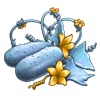
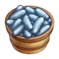

Получено: файл; исходный URL. Подписанная пиктограмма статьи, получена без перекодирования; авторство не установлено. Для статей со ссылкой на zombicity.info файл получен на другом хосте; идентичность оригиналу отдельно не проверена. Страница: источник.

Огурец
браузерная социальная игра; историческая фанатская статья, платформа и редакция уточняются- Тип
- Урожай · Железное семечко
- Версия и дата
- браузерная социальная игра; историческая фанатская статья, платформа и редакция уточняются
Дополнительные изображения



Данные по источнику · браузерная игра; платформа не уточнена · дата публикации в URL; дата дальнейших правок неизвестна
Предварительно: Фанатский источник; единицы, показанные лишь графикой, и точная применимость к платформам требуют независимой проверки. Позднее перечисление не доказывает наличие предмета в более ранней версии.. Требуется сверка.
- Выращивание
- Уровень 28, 6 часов, 2 опыта за сбор грядки. В статье «цена семян: 1», но валюта или единица рядом текстом не подписана.
- Где получить
- Статья показывает Железное семечко и места Погреб пришельцев и Пиратская бухта; в Погребе также можно собрать уже посаженные огурцы. Список может отражать поздние редакции.
- Применение
- Ингредиент серебристой пудры: 1 огурец и 5 стали, приготовление у поваров.
Связанные сущности
- Железное семечко — выращивается с Железным семечком в особых местах
- Железное семечко — растение, указанное в статье семечка
- Огурцы — «Звездный урожай», №2719 — предмет задания
- Серебристая пудра — ингредиент рецепта